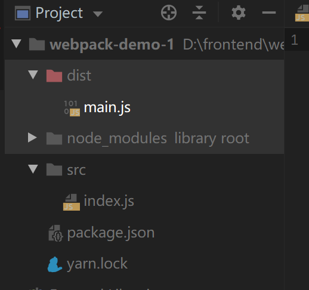
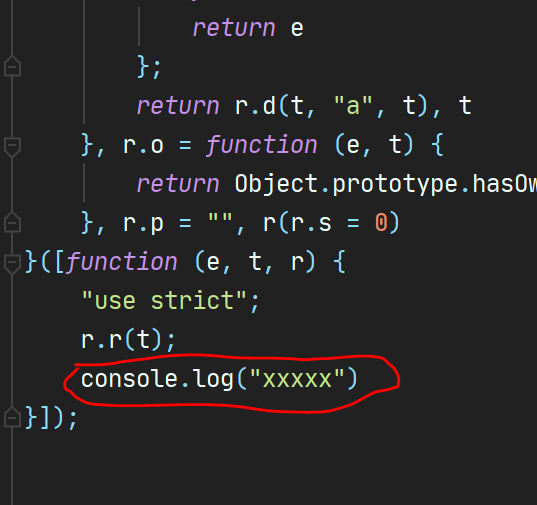
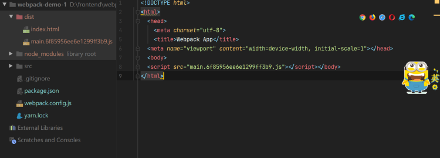
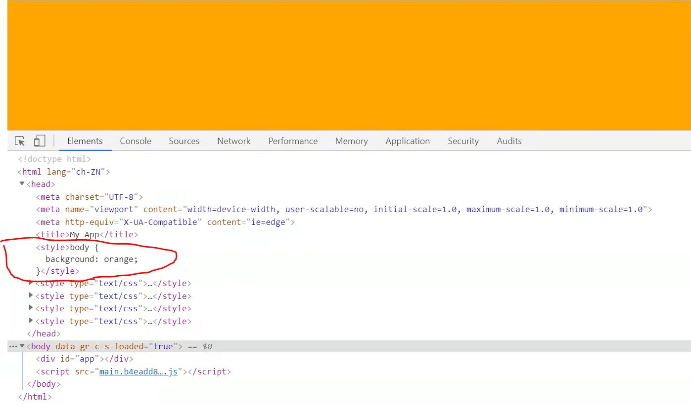

webpack
Basic Setup
1 | mkdir webpack-demo |
project
- 创建 src/index.js
Target 1 : 用webpack转译JS
完成Basic Setup后，执行程序，即可编译js
1 | ./node_modules/.bin/webpack (手动找路径法) |
- 当运行webpack后，会发现多了一个dist文件，里面还有main.js文件，这就是转译 index.js 后的结果

- 转译初体验：在index.js里写一些浏览器不能直接用的ES6语法，再用webpack转译，看能否使用
1 | // index.js |
- 转译后的main.js

- 也就是说webpack敏锐的发现了其实我们的目标就是要打印’xxx’这个string
再加上配置文件 webpack.config.js
- https://webpack.js.org/concepts/configuration/#simple-configuration
- https://webpack.js.org/concepts/
1 | const path = require('path'); |
Target 2 : 理解文件名中的hash 用途
知识点：HTTP响应头中的cash-control(HTTP缓存)
- HTTP缓存的作用：[contenthash]就是每次修改之后，会生成一次新的哈希值，所以文件名会变化，故，若内容不更新，就一直缓存，若更新，就用的新的文件名重新GET,加一个哈希值，相当于给文件加了一个版本号
- 故 filename: ‘[name].[contenthash].js’ 中hash的用途就是 便于添加缓存
配置webpack.json文件
- 由于每次重新执行webpack都会生产一个js文件，为了不占用过多内存，所以每次执行前，应该先remove 现有的dist文件
1 | "scripts": { |
- 以后只需要执行 yarn build 即可执行 “rm -rf dist && webpack”,即可先删除，再重新编译
Target 3 : 用webpack生成html
安装 html-webpack-plugin
1 | yarn add html-webpack-plugin --dev |
- 再yarn build 就会自动生成一个 index.html 文件

- 此时的webpack.config.js
1 | const HtmlWebpackPlugin = require('html-webpack-plugin'); |
- 上述代码： 按照”src/assets/test.html”为模板，title为’My App’生成 dist/html文件
1 |
|
Target 4 : 用webpack 引入 css
- 要点：可以使用JS生成style标签，也可把css抽成文件
- 需求：如何在development环境中使用JS生成style,而在production环境中，抽成css文件
安装 css-loader style-loader
1 | yarn add css-loader --dev |
- 修改配置文件
1 | webpack.config.js |
- 引入x.css,然后yarn build,通过loader，使用JS生成style标签
1 | import css from "./x.css"; |

extract css 安装插件 MiniCssExtractPlugin
1 | yarn add mini-css-extract-plugin --dev |
- 修改webpack.config.js
1 | const MiniCssExtractPlugin = require("mini-css-extract-plugin"); |
- 引入y.css,yarn build,就会看到dist/下独立的css文件
如何实现在development环境中使用JS生成style标签,而在production环境中，抽成css文件
- yarn build or yarn start,不同的命令，运行不同的webpack.config.js文件，即可区分(使用js继承思想(webpack.config.base.js)，即可解决两个文件代码重复的问题)
1 | "scripts": { |
- webpack.config.base.js
1 | webpack.config.base.js |
- webpack.config.development.js
1 | const HtmlWebpackPlugin = require('html-webpack-plugin'); |
- webpack.config.production.js
1 | const HtmlWebpackPlugin = require('html-webpack-plugin'); |
使用webpack-dev-server
之前使用 http-server -c-1,开启服务器预览，每次都需要进入dist/目录，开启，想要修改必须关掉，退出dist,往返重复
https://v4.webpack.js.org/guides/development/#using-webpack-dev-server
安装webpack-dev-server
1
yarn add webpack-dev-server --dev
配置webpack.config.development.js 文件
1
2
3
4
5
6
7module.exports = {
...base,
mode: 'development',
devtool: 'inline-source-map',
devServer: {
contentBase: './dist',
},使用webpack-dev-server ,直接运行 yarn start,执行 webpack-dev-server,即可实时预览
All articles in this blog are licensed under CC BY-NC-SA 4.0 unless stating additionally.